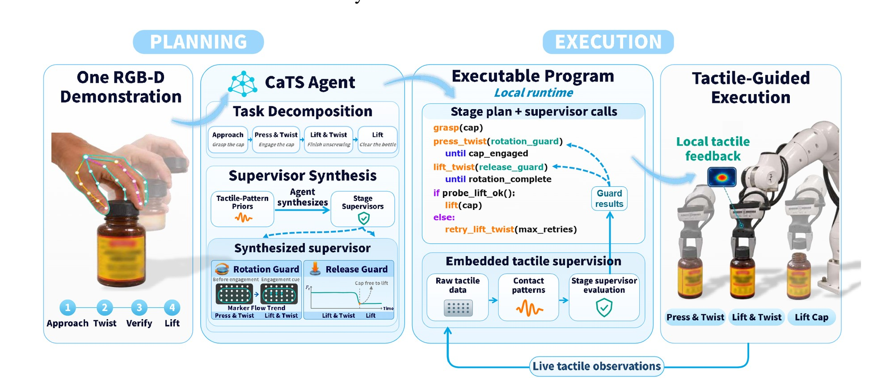
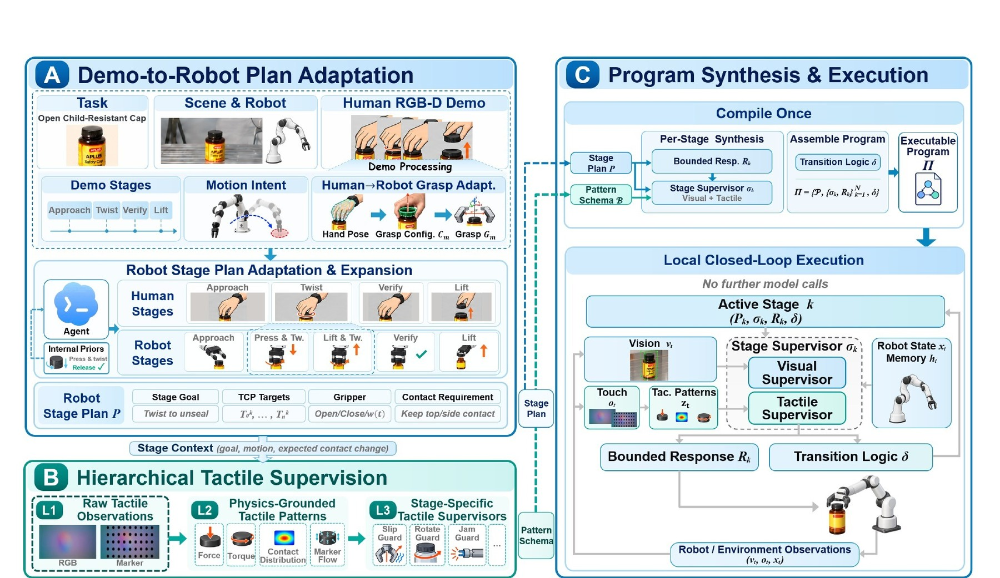
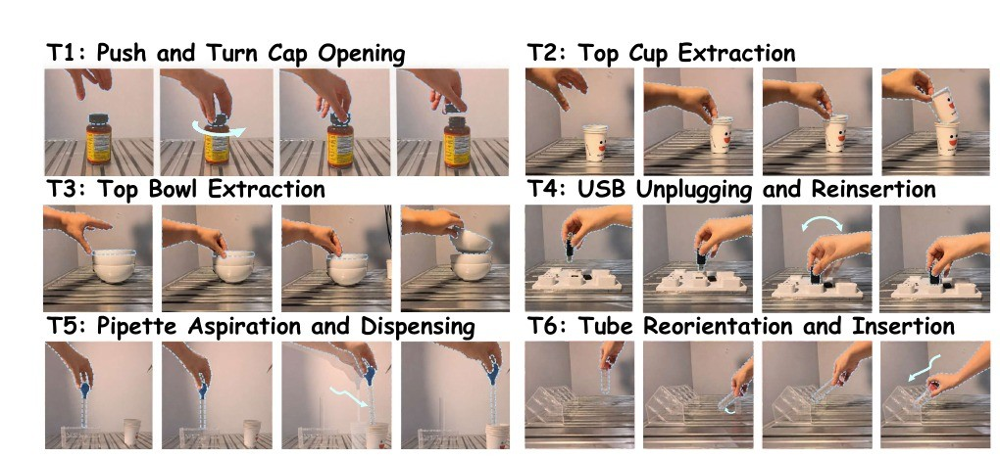
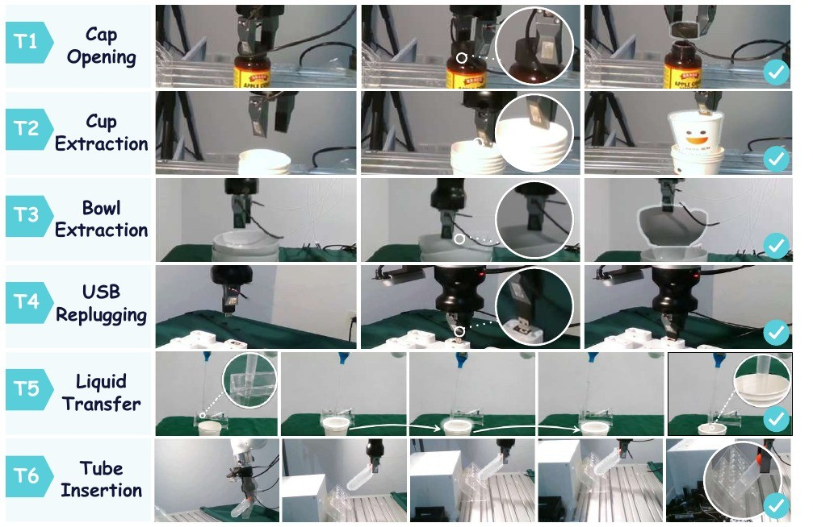

CaTS: Code as Tactile Supervisor
Grounding Robot Agents with Demonstration Priors and Tactile Supervision
CVPR 2027 submission · under review
Abstract
Agentic robot systems can synthesize executable Code-as-Policy programs and revise them from feedback. Their success in simulation depends on accurate state information and inexpensive retries. However, these agents fail in real-world contact-rich manipulation because these advantages are difficult to guarantee. Critical physical states are difficult to observe, and physical trial and error is costly. To address these challenges, we present Code as Tactile Supervisor (CaTS), an agentic framework that grounds robot agents with demonstration priors and tactile supervision. At planning time, CaTS analyzes a single human RGB-D demonstration to recover manipulation stages, motion intent, and key contact relations. Using physics-grounded tactile patterns as priors, the agent synthesizes stage-specific supervisors conditioned on this demonstration-derived task context. CaTS then compiles the robot stage plan and synthesized supervisors into a locally executable program. At execution time, raw tactile observations are encoded into contact patterns, which are evaluated by the synthesized supervisors to monitor contact conditions, drive bounded adjustments, and trigger stage transitions. The program runs locally without further foundation-model calls. Across six real-robot and twenty simulated tasks, CaTS outperforms all evaluated baselines in average success rate. Further evaluations demonstrate cross-sensor transfer and efficient local execution.
Contributions
- CaTS, an agentic framework that grounds robot agents by combining demonstration priors with tactile supervision: one human demonstration supplies the task context that turns tactile signals into stage-specific checks.
- Hierarchical tactile supervision — raw observations, physics-grounded patterns, and stage supervisors — that lets one supervision program run unchanged across heterogeneous tactile sensors.
- The best overall performance across six real-robot and twenty simulated tasks, while substantially reducing cumulative tactile feedback latency through local execution.
Method
The demonstration says what to do. Touch says whether it worked. Code runs both locally. CaTS turns a single human RGB-D demonstration into a robot stage plan, has an agent synthesize a tactile supervisor for every stage, and compiles everything into one program that closes the feedback loop on the robot without calling a foundation model.


A · Demo-to-robot plan adaptation
CaTS processes the demonstration's object and hand streams in parallel: the object branch segments targets (SAM3) and estimates 6-DoF poses (F2G-Pose); the hand branch propagates hand masks (SAM 2.1), estimates 2D keypoints (RTMPose) and lifts them to 3D joints with local depth. Changes in hand–object relative motion and contact divide the demonstration into ordered stages, each with a subgoal, a motion intent and the contacts to establish, maintain or release.
For stages where the grasp is established, CaTS extracts the human contact location, closing axis and approach direction, and keeps only the GraspGen-X robot grasps consistent with them. The agent then adapts the plan to the object (pose), the scene (trajectory) and the robot (task structure) — for example splitting a demonstrated Twist into Press & Twist and Lift & Twist to satisfy child-resistant cap mechanics.
B · Hierarchical tactile supervision
Tactile supervision is organized in three layers. L1 holds raw tactile images and marker coordinates. L2 holds physics-grounded patterns with a fixed physical meaning — the agent reads their definitions while planning, and a unified encoder fills in their values at run time. L3 holds the stage-specific supervisors the agent composes from L2 patterns.
| Category | Pattern | Runtime value |
|---|---|---|
| Contact load | Normal · Shear · Torque | scalar · 2-vector · 3-vector |
| Contact geometry | Area · Center · Axis · Elongation | per-frame contact shape |
| Marker motion | Global flow · Residual shear | mean marker displacement · per-marker residuals |
Representative pattern types (paper Table 1). For Press & Twist, the agent selects net tangential force and global marker flow, aligns them to the world frame, and composes them into a single cap-engagement cue — the Rotation Guard.
C · Program synthesis and local closed-loop execution
For every stage the agent builds a finite set of bounded responses, synthesizes the supervisor, connects the stages with transition logic and compiles the program. At each control step the encoder turns raw touch into pattern values, the active supervisor selects a bounded response, and the program advances when its transition condition holds.
grasp(cap) press_twist(rotation_guard) until cap_engaged lift_twist(release_guard) until rotation_complete if probe_lift_ok(): lift(cap) else: retry_lift_twist(max_retries)
Real-robot tasks
Six contact-rich tasks on a Franka Research 3 arm with GF220 visuotactile fingertips, each learned from a single human demonstration. Pick a task to watch an execution; speed-ups are labelled in each clip.
—

Results
Real robot
CaTS achieves a 66.7% mean success rate over six real-robot tasks (10 trials each), compared with 21.7% for Agent0 + D and 18.3% for Agent0. Both baselines receive full raw tactile observations and share the same foundation-model backbone; Agent0 + D also receives the same demonstration.
Both baselines score 0% on cap opening, top-cup extraction and tube reorientation-and-insertion.

Simulation
Across twenty simulated tasks — eight single-arm tasks from UniVTAC and twelve NeoSim tasks (four single-arm, eight bimanual) — CaTS reaches 61.8% mean success, compared with 43.1% for Agent0 + D and 30.6% for Agent0. CaTS is most effective when contact changes must trigger different responses across stages (Insert Hole, Insert Tube, Pull-out Key), and demonstrations guide coordinated action modes across two arms (Cup Handover, Stack Plates, Unstack Cup).
Agent0, Agent0 + D and CaTS use 90 trials per simulated task with one fixed program per task. Published baseline results share the official tasks and metric but serve as reference points, not same-protocol controls.
Ablations
Demonstration priors. Removing demonstration priors from tactile supervision — while keeping the same robot stage plan and tactile patterns — halves stage success (55 episodes, six representative simulated tasks).
| Method | Next action accuracy | Stage success |
|---|---|---|
| CaTS | 76.9% | 80.0% |
| CaTS w/o demo prior | 65.1% | 40.0% |
Cross-sensor transfer. One supervision program, configured once on GS Mini, transfers unchanged to GF225 and Xense WS by replacing only the sensor adapter (Lift Can, UniVTAC, 90 trials per test). Slip-onset indentation differs by less than 0.05 mm across sensors, and overload recovery stays at 100%.
| Sensor | Slip onset, standard (mm) | Slip onset, induced (mm) | Unload change (mm) | Overload recovery |
|---|---|---|---|---|
| GS Mini | 5.715 | 5.774 | −0.384 | 100% |
| GF225 | 5.763 | 5.752 | −0.970 | 100% |
| Xense WS | 5.722 | 5.747 | −0.329 | 100% |
Local feedback latency. Across five simulated tasks, CaTS recovers its initial program-generation cost after about 17–25 feedback decisions relative to CaTS-Online, which invokes the agent for every new tactile observation; the advantage grows as feedback demand increases.
Conclusion
CaTS grounds robot agents with demonstration priors and tactile supervision. Across six real-robot and twenty simulated tasks it achieves the best overall performance among the evaluated methods. Ablations show that demonstration priors improve tactile supervision, the hierarchical design transfers one supervision program across heterogeneous tactile sensors, and local execution substantially reduces cumulative feedback latency.
Citation
The paper is under anonymous review. A citable version will be posted after the review period.
@inproceedings{cats2027,
title = {Code as Tactile Supervisor: Grounding Robot Agents with Demonstration Priors and Tactile Supervision},
author = {Anonymous},
booktitle = {Under review},
year = {2027}
}